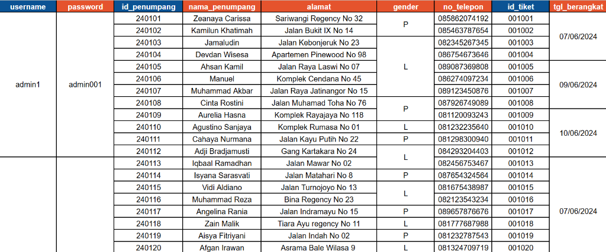
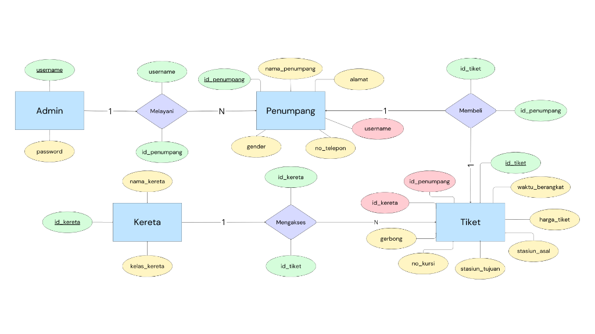
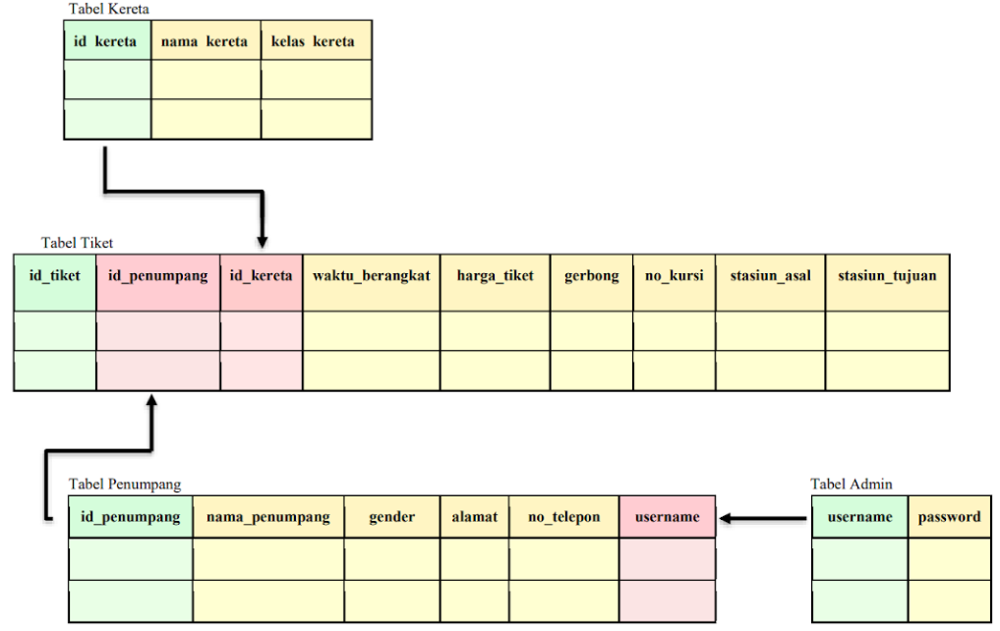
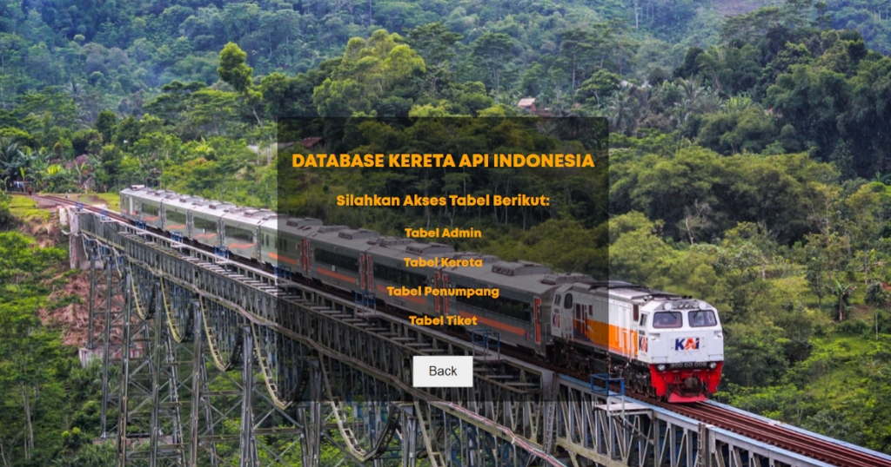

Relational Database System Design for PT KAI
2024 • ER-Diagram, Relational Table, Data Normalization, CRUD
Designed a normalized relational database (3NF) with 4 core entities, handling 1:1, 1:N, and N:M relationships, and implemented full CRUD functionality to ensure consistent ticketing and passenger data management.